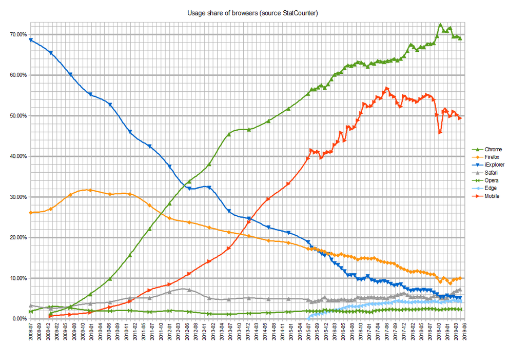

序曲
1989年，伯纳斯-李发明了万维网。故事从这里开始。1991年，他发布了第一个浏览器。
到1993年时已经有了了许多浏览器。其中最具影响力的是NSCA发明的Mosaic浏览器。
1994年，Mosaic的开发者之一——马克·安德森成立了名为Mosaic Communications Corporation的公司，开发出了一个名为Mosaic Netscape的浏览器。后来因为与NSCA的法律问题，公司改名叫做Netscape Communications Corporation，浏览器改名叫做Netscape Navigator。这家公司就是下文要提到的网景公司。
第一次浏览器大战(1995-2001)
网景浏览器以它的实用性和稳定性快速统领了市场，前途一片大好。
到了1995年中期，人们开始注意到互联网，此时网景已经主导了Web的标准。
8月，微软插手了这片领域。微软推出了一款浏览器，名叫Internet Explorer，也就是IE浏览器。三个月后，IE 2.0发布了，微软与网景的竞争开始了，大战爆发。
在这段时间里，浏览器间开始了军备竞赛。它们的军备竞赛简直到了一种疯狂的地步。它们都追求更多的功能，而把修复错误放在第二位。这导致了许许多多的问题，包括死机、安全漏洞。这给用户带来了很多困扰。它们按照自己制定的标准走，我行我素，造成了互联网页面标准的混乱，让开发者不得不为不同浏览器编写不同的页面。
1996年，IE3推出。它成为了第一款支持编程语言和CSS的浏览器，使它的市场份额开始猛追Netscape。
1997年，IE4推出。这一个版本对大战起到了至关重要的作用。由于它在支持W3C标准上比Netscape 4.0做的要更好，也可以动态加载网页，还可以改变图片和文字的位置，并且支持MP3音频，IE的市场份额提升得更多了。最重要的是，它随Windows系统捆绑安装。
IE4发布后次日，Netscape的员工们在前方的草坪上发现了IE的大“e”标志，上面写着“From the IE team … We Love You”。Netscape员工立刻把巨型标志推翻，并放上其吉祥物Mozilla恐龙，恐龙手上纸牌写着“Netscape 72, Microsoft 18”，代表当时的浏览器市场占有率。谁也没有想到，IE的市场份额很快就超过了网景。
微软捆绑销售的举措增加了大量用户，也导致了当年著名的1998年美国诉微软案，但微软撑过了官司。网景的财路被微软断掉了，它没有那么充裕的资金来对抗微软，再加之网景公司错误的商业决策，它在1998年底被IE击败了。
大势已去，AOL将以42亿美元收购网景。在被收购前的这段时间里，一位公司的管理层人员读到了艾瑞克·雷蒙德所著的《大教堂与集市》。这使他们开始考虑开源这一条路。随后，它发布了Communicator的源代码。它被托付给了刚刚成立的Mozilla基金会——一个由社区驱动的非营利组织，以建立Netscape的接班人。
网景败了。到了2002年，IE占据了96%的浏览器市场份额。IE以它那强大的背景战胜了Netscape和它的其他竞争对手。 正如网景总裁兼首席执行官吉姆·巴克斯代尔（Jim Barksdale）所言：“在战争中，很少有规模较小的部队战胜规模较大的部队……”。
回头看这场大战，它给我们留下了许多东西。Netscape在竞争中开发出了JavaScript，它在日后成为了Web难以分割的一部分。这场大战给了后来的浏览器厂商许多经验教训。同时，这也是Web的一场浩劫。大战中，双方都开发了大量非标准的专有功能却不注重漏洞的修复，造成了浏览器的许多怪异的非标准行为。
第二次浏览器大战(2004-2017)
网景被并购的第二天，Mozilla基金会成立。该基金会的目的是协调Mozilla未来的发展。他们彻底重写了Mozilla的代码。
2001年，战胜的微软不紧不慢地发布了IE6。这是它这一年中仅有的一个版本。
2002年，Mozilla 1.0发布。它快速地在开源社区内传播开来。网景涅槃了。同一年里，苹果在KDE项目的Konquerer浏览器中KHTML和KJS引擎的基础上，开发出了Webkit布局引擎。他们表示，这一引擎设计更简洁、更符合标准，使得基于它的开发更容易。它被应用进了Safari浏览器，在2003年随Mac OS X v10.3一同发布。
2003年，微软宣布IE6 SP1以后不再提供独立于Windows下载的浏览器，未来更多的功能将与Windows Vista共同推出。6月13日，微软宣布停止Mac平台上对IE的支持。
2004年4月，Mozilla基金会和Opera公司共同开发新的开放Web标准，成立了WHATWG工作小组，向W3C提交标准以供审批。Opera公司在浏览器战场上一直不显眼，但它的产品以创新的功能和轻巧但功能丰富而著称，它的移动版Opera Mini占据了移动端市场的大部分份额。但由于它是收费软件，所以它一直处于竞争中的不利地位。9月9日，基于Mozilla的Firefox浏览器推出1.0版本。同年，IE浏览器受到名为Download.ject的恶意软件攻击，在访问网页的时候就有可能被植入后门。人们开始注意到IE的安全性问题。随后，多家安全公司推荐用户使用更安全的Firefox浏览器。
这段时间里，随着设备和浏览器的种类增多，要求页面有更好的兼容性，包括DOM和AJAX，标准被重新重视了起来。浏览器厂商不再鼓吹它们的专有扩展，开始根据对标准的支持来进行推广。
2005年，Opera转为免费软件，它的市场份额有所上升。同年2月，微软宣布Windows XP中将会提供IE7，称其将提供更好的安全性。但微软并未就网页标准方面表态。
2005年年底，IE的市场份额跌至85%。导致IE市场份额下滑主要原因IE较低的安全性和Firefox的竞争。
2006年，Firefox和Opera的市场占有率持续增长，但增长速度有所放缓。Firefox的市场占有率接近了20%。这使微软感受到了深深的压力。6月20日，Opera 9发布，它是第一个通过Acid2测试的Windows浏览器。8月底，IE7的第一个候选版本发布。这包括选项卡式浏览，搜索栏，网络钓鱼过滤器以及对Web标准的改进支持（包括对PNG的完全支持），但这些都是Opera和Firefox早已实现的功能。10月18日，IE7发行。IE7发布几天之内下载量就达到了惊人的300万，但发行几小时后漏洞就被发现了，令人大失所望。Microsoft通过Windows Update将IE7作为高优先级更新分发给了正版Windows用户。但市场份额分析表明，IE7的普及速度很慢，Microsoft决定放弃对正版Windows的要求，并于2007年10月向所有Windows用户提供IE7。在随后的两年中，Microsoft开始开发IE8。Firefox随后在10月24日推出2.0版本。它包含了打开最近的标签页、崩溃时的会话存储、钓鱼过滤器和文本框的拼写检查等功能。这一时期，Firefox由于其“复杂的操作”和对IE的不兼容，导致了普通用户对其望而却步，市场占有率始终在16%和18%之间徘徊。战争进入了僵持阶段。
2007年12月19日，微软宣布，IE8的内部版本已通过Acid2 CSS测试，这是最后一个通过Acid2测试的主要浏览器。
2008年6月17日，Mozilla 3.0发布，包含性能改进和安全性更新。12月11日，Google投入了战斗。Google发布了Chrome浏览器的Windows版本，它使用了Webkit渲染引擎并使用了最快的JavaScript引擎——V8。不久，它的开源、跨平台版本Chromium发布。到了2009年，它已经占据了市场份额的3.6%。
2009年，IE8发布。该版本包括改进的隐私保护，针对用于较旧浏览器的页面的兼容模式，以及对各种Web标准的改进支持。IE8在Acid3测试中得分为20/100，远低于当时的所有主要竞争对手。6月30日，Mozilla 3.5发布，提供了更深层次的性能优化，内置了对音频和视频的支持，增加了更多隐私保护功能。
2009年年底，根据StatCounter的数据，非IE浏览器的市场份额在Netscape倒闭后首次超过了IE，并且Firefox 3.5的市场份额略微超过了IE7和IE8。
2010年1月21日，Firefox 3.6发布，包含全新的主题显示和Javacript引擎性能和启动优化。到了10月，IE的市场份额首次跌破50%，跌至49.87%。
2011年2月3日，Chrome 9发布。该版本包含对WebGL的支持和Chrome Instant以及Chrome网上商店。同一年里，Google发行了7个Chrome的版本，最终在12月15日发布了Chrome 16。同年3月14日，微软发布了IE9。它包含一个全新的界面以及对SVG的基本支持和对HTML5视频的部分支持。它仅能运行在Windows Vista、Windows 7和WIndowsPhone 7上。Firefox吸收了Chrome快速发布的概念，在6月21日发布了Firefox 5.0，距离上一个版本发布仅有6周。Mozilla全年创建了另外四个整数版本，2011年12月20日完成了Firefox 9的发布。对于那些需要长期支持的人，Mozilla在2012年1月31日发布了Firefox 10的扩展支持版本（ESR）版本。在常规版本的基础上，Firefox ESR会收到大约一年的常规安全更新以及偶尔的新功能和性能更新，此后会给予12周的宽限期，然后再停止支持该版本。Firefox和Chrome之间的竞争愈发变得激烈。
2012年2月15日，Chrome 17发布。3月21日，StatCounter报告Chrome的市场份额略微超过了IE成为了世界上使用最广泛的浏览器。但这只是因为IE正处于低谷，Chrome正处于一个高峰。在7月4日之前的工作日，IE的市场份额都比Chrome略微领先。同时，Net Application报告IE市场份额稳居第一，Chrome超过了Firefox成为第二。为了响应Chrome的流行，苹果停止了Windows下Safari的开发。同年，IE10随Windows 8和WindowsPhone 8发布。
2013年2月，鉴于WebKit在移动浏览器中的普及，Opera Software停止了其自己的Presto引擎。Opera 12系列浏览器是最后一个使用Presto的浏览器，其后继产品使用WebKit引擎。9月17日，IE11发布，支持的平台和IE10相同。
在这个时代，所有主要的网络浏览器都实现了对HTML5视频的支持。但是，不同的浏览器支持的编解码器也有所不同。当前版本的Chrome和Firefox支持Theora，H.264和VP8版本的WebM。较早版本的Firefox忽略了H.264，因为它是专有的编解码器，但它从Android的版本17和Windows的版本20开始提供该功能。IE和Safari仅提供H.264支持，但是Theora和VP8编解码器可以手动安装在桌面版本上。
2015年，大势已去，Microsoft停止开发IE的新版本。至此，Chrome取代了所有其他浏览器，成为市场份额最高的浏览器。但微软没有就此死心。随着Windows 10的发布，微软开发了新的Edge浏览器。但该浏览器直到2018年都没有太大的人气。
2016年1月12日，微软停止支持旧版的IE浏览器。
2017年，IE、Firefox、Opera的市场份额都下降了5%左右，Chrome霸占了60%的市场份额。2017年5月26日，前Mozilla首席技术官Andreas Gal公开表示Google Chrome赢得了第二次浏览器大战。
第二次浏览器大战落幕了。
余波(2017至今)
2018年，微软宣布：由于Chrome的成功，新的Edge浏览器将会采用Google的Chromium内核和Blink渲染引擎。
2020年1月5日，基于Chromium内核的新版Edge发布。
2020年8月17日，微软宣布将于2021年3月9日停止对旧版Edge的支持。
回首
回首两次大战，看看胜者和败者，道理很简单。败者都是死于闭塞和固步自封，胜者都是胜在开放自由、尊重标准、紧跟技术进步。这个世界是趋向自由和开放的，落后于时代是注定要灭亡的。
如今Web的未来仍不明朗。新一轮的大战是否会开始？Chrome又是否会从屠龙勇士变成龙？这一切都还不好说，只能期待未来会有一个开放的Web、标准化的Web、进步的Web。

完结撒花🎉